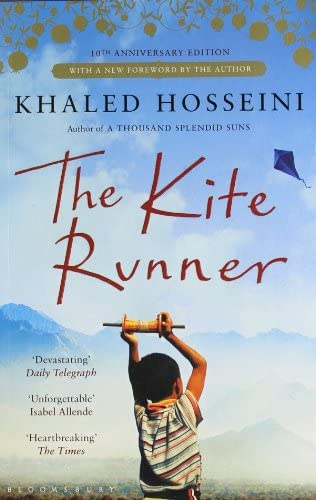

The Kite Runner
Author: Khaled Hosseni
About Author:
Khaled Hosseini is an Afghan-American novelist, UNHCR goodwill ambassador,
and former physician. His debut novel The Kite Runner was a critical and
commercial success; the book and his subsequent novels have all been at
least partially set in Afghanistan and have featured an Afghan as the
protagonist.

My View:
This is one of the best novel I have ever read. The story in this books is
mesmerizing and emotion. While reading this I felt like I am the main
character of the book and this is my story. Basically what I mean is the
story telling is very impressive.
Summary:
The Kite Runner is the story of Amir, a Sunni Muslim, who struggles to find his place in the world because of the aftereffects and fallout from a series of traumatic childhood events. An adult Amir opens the novel in the present-day United States with a vague reference to one of these events, and then the novel flashes back to Amir's childhood in Afghanistan. In addition to typical childhood experiences, Amir struggles with forging a closer relationship with his father, Baba; with determining the exact nature of his relationship with Hassan, his Shi'a Muslim servant; and eventually with finding a way to atone for pre-adolescent decisions that have lasting repercussions. Along the way, readers are able to experience growing up in Afghanistan in a single-parent home, a situation that bears remarkable similarities to many contemporary households.
One of the biggest struggles for Amir is learning to navigate the complex socioeconomic culture he faces, growing up in Afghanistan as a member of the privileged class yet not feeling like a privileged member of his own family. Hassan and his father, Ali, are servants, yet at times, Amir's relationship with them is more like that of family members. And Amir's father, Baba, who does not consistently adhere to the tenets of his culture, confuses rather than clarifies things for young Amir. Many of the ruling-class elite in Afghanistan view the world as black and white, yet Amir identifies many shades of gray.
In addition to the issues affecting his personal life, Amir must also contend with the instability of the Afghan political system in the 1970s. During a crucial episode, which takes place during an important kite flying tournament, Amir decides not to act — he decides not to confront bullies and aggressors when he has the chance — and this conscious choice of inaction sets off a chain reaction that leads to guilt, lies, and betrayals. Eventually, because of the changing political climate, Amir and his father are forced to flee Afghanistan. Amir views coming to America as an opportunity to leave his past behind.
Although Amir and Baba toil to create a new life for themselves in the United States, the past is unable to stay buried. When it rears its ugly head, Amir is forced to return to his homeland to face the demons and decisions of his youth, with only a slim hope to make amends.
Ultimately, The Kite Runner is a novel about relationships — specifically the relationships between Amir and Hassan, Baba, Rahim Khan, Soraya, and Sohrab — and how the complex relationships in our lives overlap and connect to make us the people we are.
Thank you reading ❤️